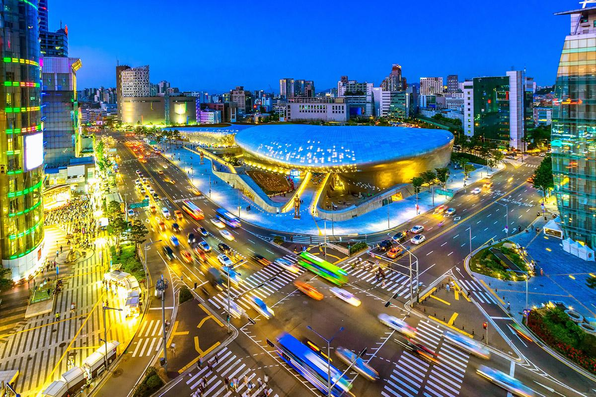
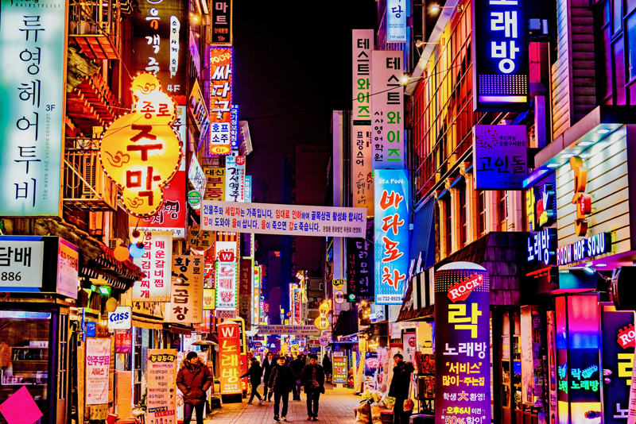

Seúl (서울), oficialmente Ciudad Especial de Seúl (서울특별시), es la capital de Corea del Sur desde la creación de esta república en 1948, la capital histórica de Corea desde hace más de 600 años y la ciudad más poblada de la península de Corea.
Situada en el noroeste del país, a unos 50 kilómetros de la zona desmilitarizada que separa las dos Coreas, forma una unidad administrativa propia dentro del Estado. Está atravesada por el río Han.
Hoy en día, Seúl es considerada una ciudad global, resultado de una explosión de crecimiento económico conocido como el Milagro del río Han, que recuperó a una ciudad destruida por la guerra de Corea en la cuarta economía metropolitana del mundo con un PIB de 773 900 millones de dólares estadounidenses, solo por detrás de Tokio, Nueva York y Los Ángeles.
Con unos 10 millones de habitantes en la ciudad propiamente dicha, y 24,5 millones en toda el área metropolitana, que incluye el puerto de Incheon y la provincia de Gyeonggi, se trata de la cuarta área metropolitana más grande del mundo.
En 2012, las Naciones Unidas situaron la calidad de vida de Seúl por encima de ciudades como Nueva York, Londres o Melbourne, y por debajo de Tokio o París.
UBICACIÓN: